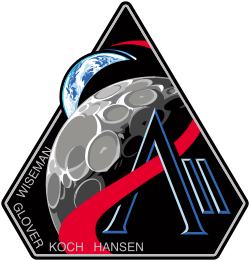
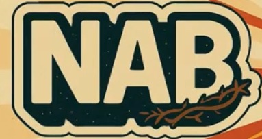
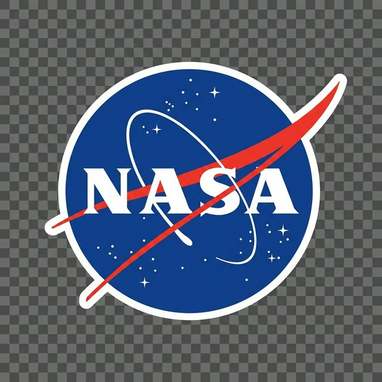

Misión Artemis II
Ver en vivo el Artemis II
Lo que se vivió en NAB
Estado de la Misión
1 de Abril, 2026
Despegue Exitoso
Lanzamiento exitoso desde el Complejo 39B del Kennedy Space Center.
3 de Abril, 2026 - Actualidad
Trayectoria Trans-Lunar
Inyección Trans-Lunar completada con éxito. La nave Orion se encuentra en camino a la Luna.
6 de Abril, 2026
Aproximación Lunar
Máximo acercamiento a la Luna (aprox. 5,000 millas). Inicio de fase de retorno.
10 de Abril, 2026
Splashdown
Regreso a la Tierra y amerizaje programado en el Océano Pacífico.
Cuenta Regresiva
ARTEMIS ll